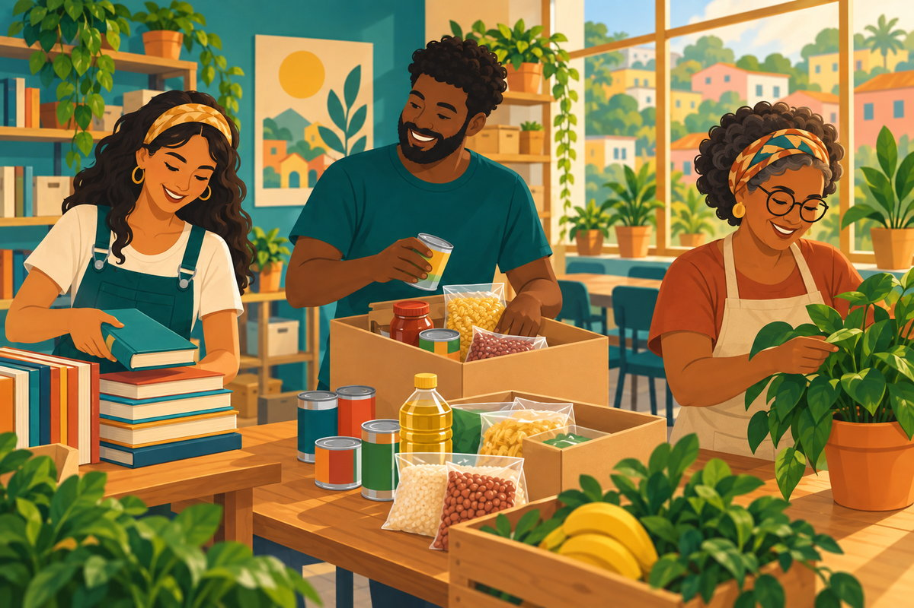

Pequenas atitudes, grandes mudanças
Somos uma organização sem fins lucrativos que trabalha junto com a comunidade para ampliar oportunidades, cuidar das pessoas e construir um futuro melhor.
Com educação, solidariedade e participação, cada pessoa pode ajudar a transformar o lugar onde vive.
Faça parte
Quem somos
O Instituto Sementes do Amanhã nasceu do desejo de aproximar pessoas que querem contribuir com ações sociais. Atuamos com respeito, escuta e colaboração, valorizando os talentos da própria comunidade.
Como você pode ajudar
Você pode participar como voluntário, apoiar nossas campanhas de doação ou divulgar os projetos. Conheça as iniciativas e escolha a forma que combina com você.